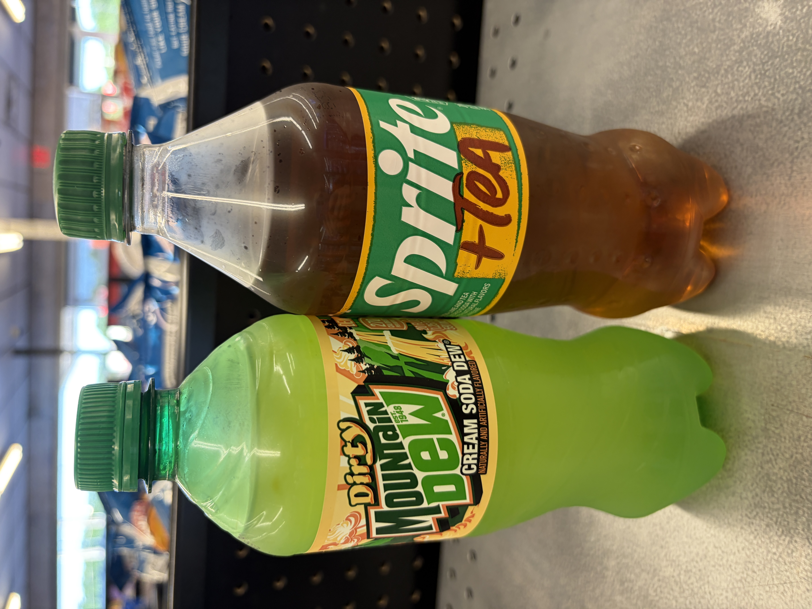
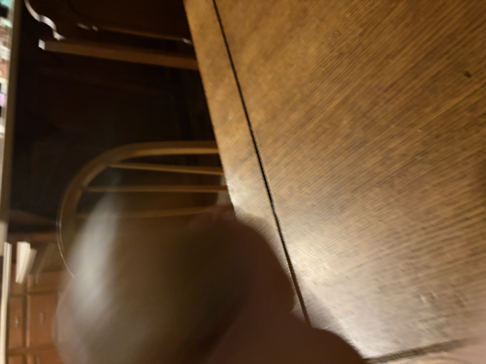
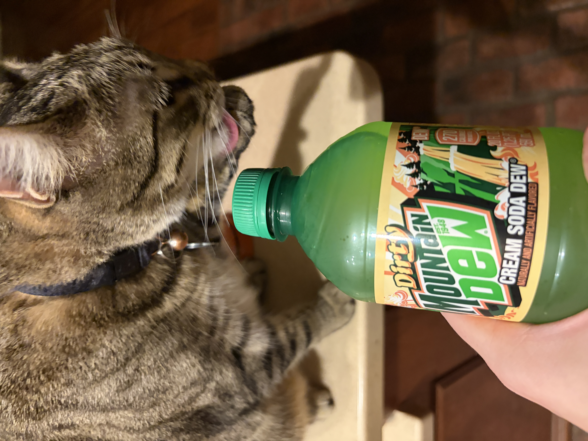

The two sodas 🥤🥤
Smells like very sweet tea with some citric acid
If I go in for a deeper sniff then it just smells like sprite
First light sip
Okay
Hmmm
I’m an unsweetened tea enjoyer
So I can’t hint out how this is exactly super different to generic sweet tea with lemon
But
I mean this is carbonated, obviously
One more light sip
Tastes like very sweet tea super initially
Fades to an extra potent and bland whiteness from sprite
Back to sweet tea
Then in the back of your throat when you exhale there’s some very strong Sprite with a bit of sweet tea in there
Took a bigger sip
It’s much worse taking a bigger sip
You just get the sprite action with a hint of tea, which is quite bad, I do not like sprite
Biggest sip
Ah
Quite foul
It gets in your mouth and just festers
And stings
And so you have to swallow it but when you do you’re just left with a hollow dark sprite aftertaste and hints of sweet tea
Had another small sip and now I’ve been soured on it
It just is too many clashing elements
The sprite, the tea, and the carbonation can never meld into one solid, good flavor
I’m gonna shake the shit out of it to see how it tastes flat

Shaking
Okay I shook it a shitton, let it bubble out, and then repeated five times
(For good measure)
It should now be extremely flat
Medium sip. It’s less offensive now that it’s flat but it’s still quite bad
Done trying to save this concept. Going down the drain 👎

Bertuch does not care for Mormon soda ✝️
Okay this is why the smell test matters
Because this shit smells FOUL
Idk how to describe it
Like a mix of whipped cream and sour cream
A very earthy root in there now that I’m taking a deep whiff
Very vanilla
Okay on subsequent whiffs now the entire smell is just vanilla
Idk why the initial smell is so terrible
First small sip
Oh
Uh uh
That’s quite bad
Very key lime pie
Extremely little depth
Like the flavor is so hollow
It’s there and then it’s gone and it leaves in its absence a very light vanilla on your breath and in the back of your throat but absolute gross nothingness on your tongue
Big sip
Oh god
Cacophony
Um
Key lime pie aftertaste
Then nothing
The initial flavor is just so bad
Did another to hint it out
When it first enters your mouth you’re hit with a pleasant key lime pie and then all of a sudden a sour noisy explosion of carbonation hits your tongue and you’re blindsided by a rank quite disturbing flavor
And then you swallow and you’re left with a soft key lime pie
And over the course of about 10 seconds it fades to a warm (very artificial) vanilla
No
Slightly cold actually
No now it’s room temperature
God I hate this
Okay the after-aftertaste has now hit and it’s like syrupy-sweet warmth
But it’s sticky and gets caught in your throat
Deeply unpleasant soda
I’m gonna try one more sip but this might dethrone the memory of Dr. Pepper Dark Berry as worst soda I’ve ever had
Final sip
Discovered a new wave
The battle between carbonated horrible sour twisted Mountain Dew and key lime pie is in waves and I’ve just been swallowing too fast
Goes key lime pie -> cold horrible (for a while) -> short wave of key lime pie -> warm horrible (and then I swallowed)
And it’s all so surface-level there’s no depth
It's just
Long
Sending this shit to Outer Darkness